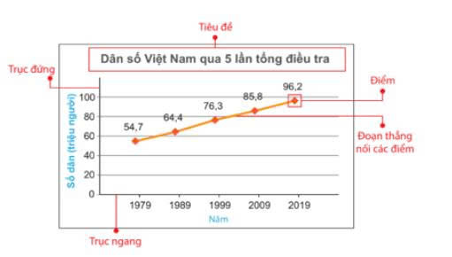
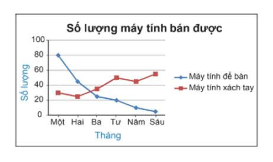
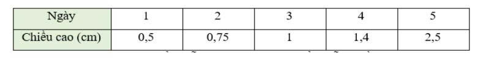
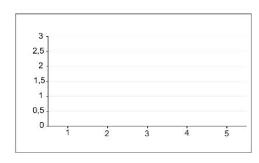
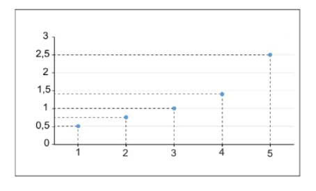
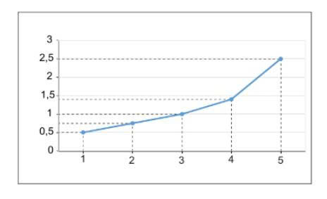
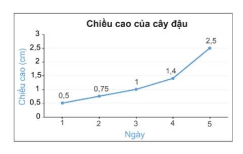

• Biểu đồ đoạn thẳng thường được dùng để biểu diễn sự thay đổi của một đại lượng theo thời gian.
• Các thành phần của biểu đồ đoạn thẳng bao gồm:
+ Tiêu đề của biểu đồ thường ở dòng trên cùng.
+ Trục ngang biểu diễn thời gian.
+ Trục đứng biểu diễn đại lượng ta đang quan tâm.
+ Mỗi điểm biểu diễn giá trị của đại lượng tại một thời điểm. Hai điểm liên tiếp được nối với nhau bằng một đoạn thẳng.

+ Có thể dùng biểu tượng khác như dấu chấm tròn, dấu nhân,... để biểu diễn các điểm.

• Biểu đồ đoạn thẳng giúp ta dễ dàng nhận ra xu thế của đại lượng ta đang quan tâm theo thời gian.
• Độ dốc của biểu đồ đoạn thẳng cho biết tốc độ tăng của đại lượng được biểu diễn trong biểu đồ.
• Đôi khi người ta biểu diễn nhiều bộ số liệu trên cùng một biểu đồ để so sánh (mỗi đường có chú giải ứng với một bộ số liệu).
• Chẳng hạn, vẽ biểu đồ biểu diễn chiều cao của cây đậu theo bảng thống kê dưới đây, ta làm như sau:

+ Bước 1: Vẽ trục ngang biểu diễn ngày, trục đứng biểu diễn chiều cao cây đậu. Do chiều cao lớn nhất là 2,5 cm và thấp nhất là 0,5 cm nên ở trục đứng ta chọn đơn vị là 0,5 và giá trị lớn nhất là 3.

+ Bước 2: Với mỗi ngày trên trục ngang, chiều cao của cây đậu tại ngày đó được biểu diễn bởi một điểm.

+ Bước 3: Nối các điểm liên tiếp với nhau bằng các đoạn thẳng.

+ Bước 4: Ghi chú thích cho các trục, điền giá trị tại các điểm (nếu cần) và đặt tên cho biểu đồ để hoàn thiện biểu đồ.

• Độ dốc của biểu đồ phụ thuộc vào việc chọn đơn vị của trục đứng. Khi số liệu lớn trong khi đơn vị độ dài của trục đứng nhỏ thì ta không nên vẽ trục đứng bắt đầu từ 0.